Read Tokyo before designing for it.
Map the brand's verified presence, competitive context and the distinct roles of Harajuku/Jingumae, Shibuya, Omotesando/Aoyama, Daikanyama, Nakameguro and Ginza.
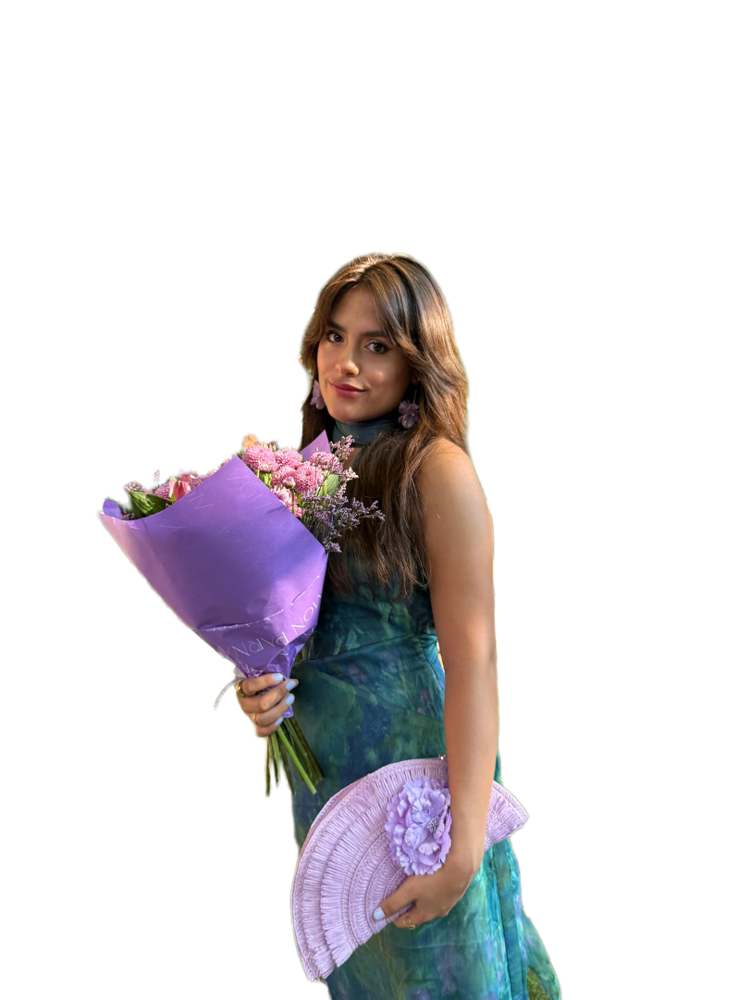
I turn research into strategies, experiences and systems people can use.
I’m a Business & Strategy Consulting Analyst based in Madrid, with a degree in Business Administration taught in English at Universidad Carlos III de Madrid and an Erasmus experience at Rennes School of Business, focused on Marketing and Finance.
I’m especially interested in the intersection of strategy, fashion, luxury and consumer brands. I want to keep moving towards roles where analytical thinking, brand understanding and creativity come together — turning insight into clear direction and tangible experiences.
Market expansion → cultural presence in Tokyo.
Consumer research translated into a navigable beauty product.
Luxury strategy, campaign system and Gen Z relevance.
Strategy, analytics and transformation delivery.
A market expansion and cultural brand-building concept built from research into Gimaguas' existing Japanese distribution, Tokyo's fashion ecosystem and youth culture.
Market researchBrand strategyPRExperiential retailGimaguas is already commercially present in Japan through selected retailers. The strategic question therefore shifts from “How can Gimaguas enter Japan?” to “How can Gimaguas move from selective distribution to a distinctive cultural presence in Tokyo?”
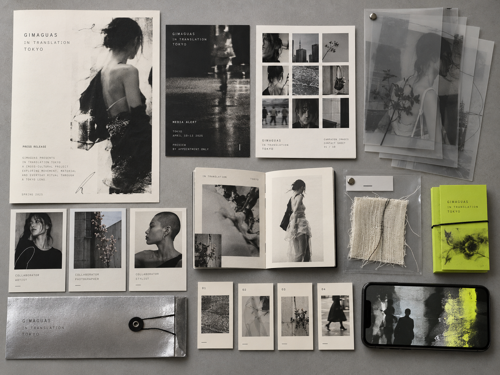
Map the brand's verified presence, competitive context and the distinct roles of Harajuku/Jingumae, Shibuya, Omotesando/Aoyama, Daikanyama, Nakameguro and Ginza.
Use the Jingumae–Harajuku–Shibuya axis as the launch ecosystem, connecting existing touchpoints with an owned brand moment.
Tokyo does not replace Barcelona. Local creatives interpret Gimaguas through space, styling, image, sound and objects while the brand keeps its own identity.
The physical experience is designed as the primary brand-building moment: immersive enough to inhabit, specific enough to be shared organically.
A limited local collaboration and selective creator/press seeding extend the idea without turning it into a generic influencer launch.
Editorial imagery, social storytelling and event moments document the translation process before, during and after the pop-up.
Existing retail partners provide distribution continuity and a bridge from cultural activation back into product discovery.
A B2C beauty discovery concept developed from market analysis, focus group and survey research — translated into a product experience rather than a static case study.
Consumer researchProduct conceptUXInstead of showing finished screens, this section lets the viewer experience the core product logic. Navigate the demo, make a few choices and see how MATCH turns beauty discovery into a guided decision.
The visual system translates the same product principle into the brand: clarity, guidance and personal relevance. Editorial imagery creates aspiration, while concise product cues keep the experience useful. Together, they position MATCH between a beauty platform and a trusted personal editor.
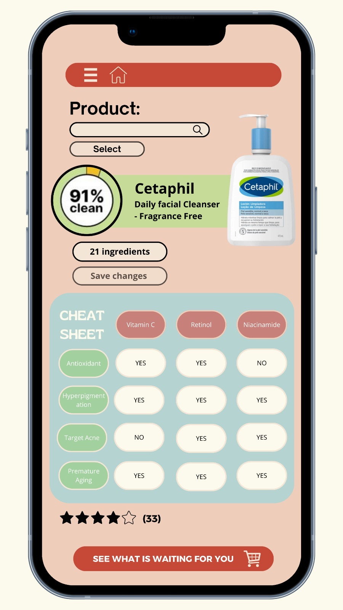
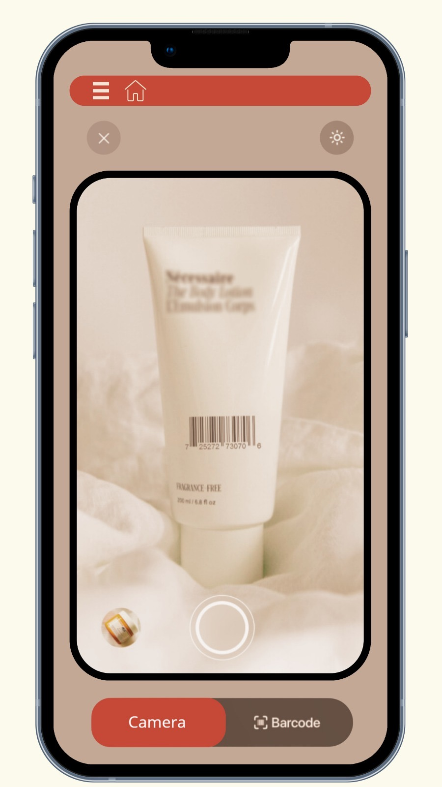
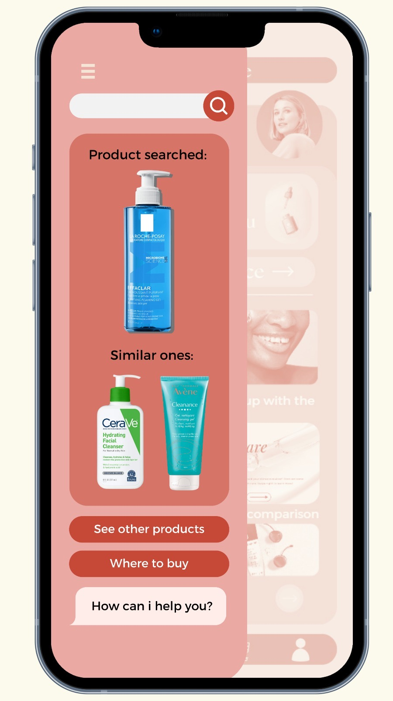
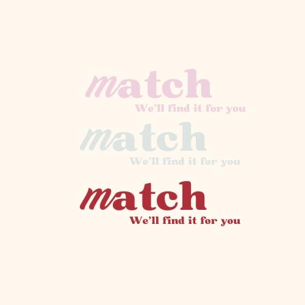
MATCH structures the decision around the user: discover a need, scan or input a product, receive a personalised match, compare alternatives and retain preferences in a profile.
A comprehensive marketing plan for Generation Z in the U.S. luxury jewellery market. The portfolio experience follows the logic of the strategy: tension → opportunity → campaign system → evidence → journey → measurement.
Luxury marketingGen ZIMCPersonalisationConnect an established luxury icon with Gen Z without diluting the codes that make it iconic.
A digitally native audience seeking expression, meaning, participation and values alongside desirability.
Research, diagnosis, positioning, marketing plan, creative concepts, channel strategy and measurement.
Drag the cursor. The challenge was not choosing heritage or Gen Z relevance. It was finding the point where Tiffany could become more personal, connected and conscious without losing the authority of its heritage.
Blue Box, craftsmanship, romance, status and long-established brand codes.
Self-expression, digital participation, broader expressions of love and visible responsibility.
The research is translated into one strategic platform with three jobs: make Tiffany more personal, make discovery more connected, and make responsibility more visible.
Each visual appears only when it has a strategic role to explain. Scroll through the system to see how the idea moves from personalisation to social discovery, craft, responsibility, modern love and owned content.
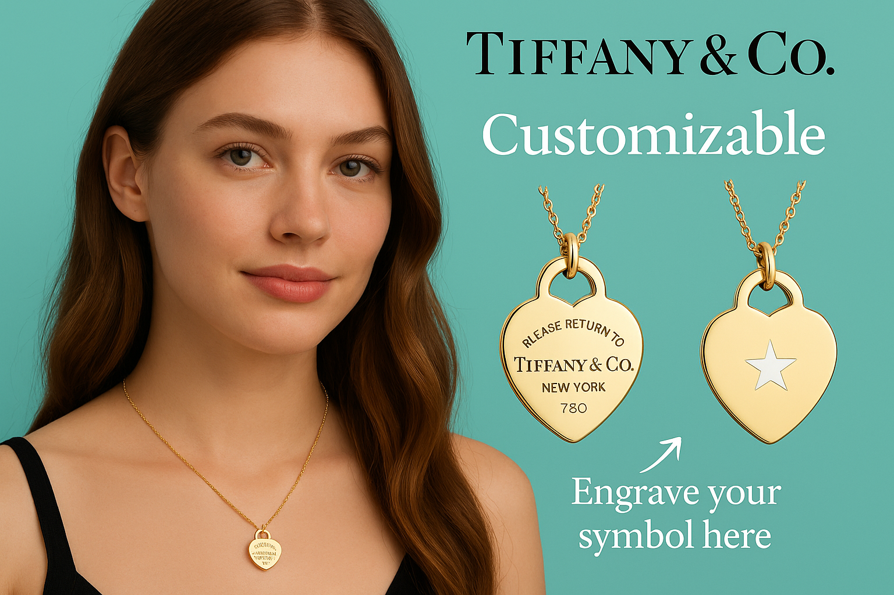
Customisation turns an iconic product into a vehicle for self-expression. The visual is evidence of the first strategic pillar — not a standalone ad.
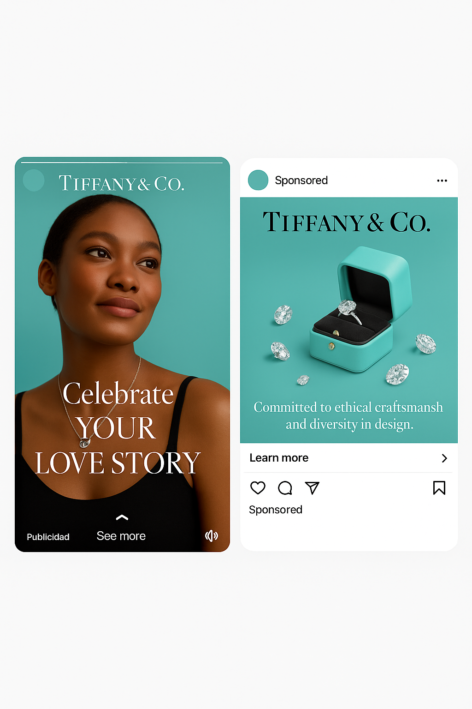
Instagram-style paid and organic formats translate the positioning into a familiar discovery environment while preserving Tiffany codes.
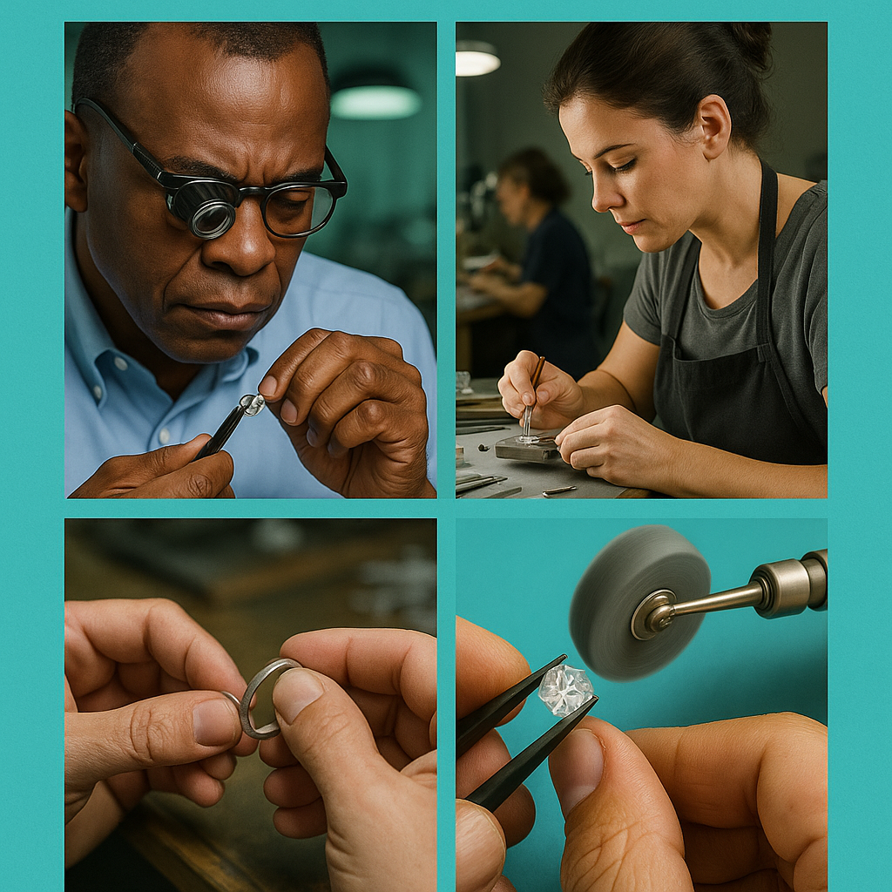
Craftsmanship content gives the brand a human layer: expertise, people and process become part of desirability.
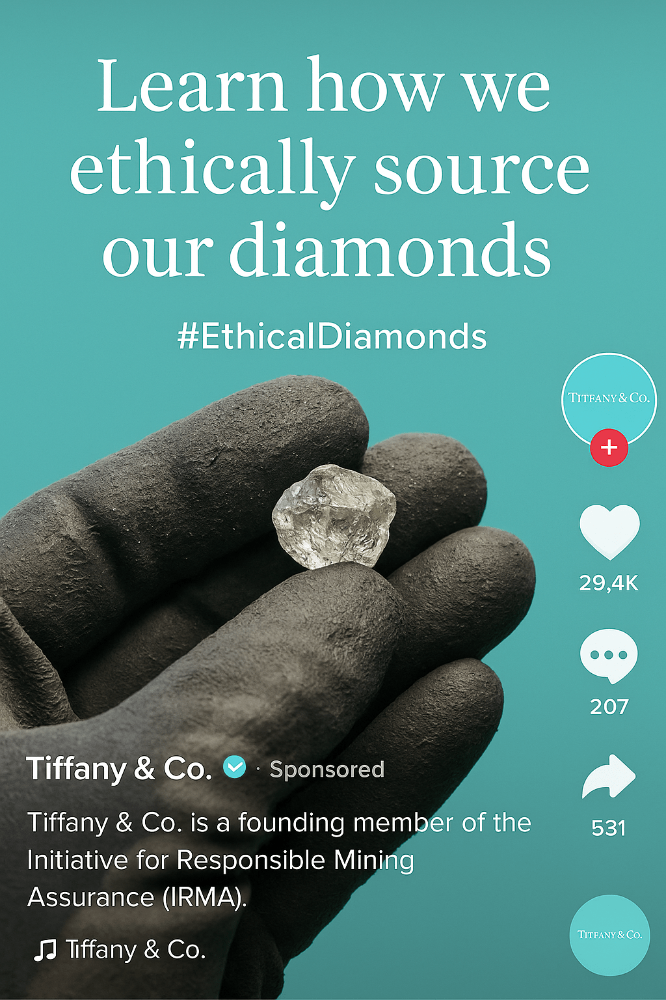
Ethical sourcing content supports the 'with a conscience' side of the strategy by connecting luxury to provenance and responsibility.
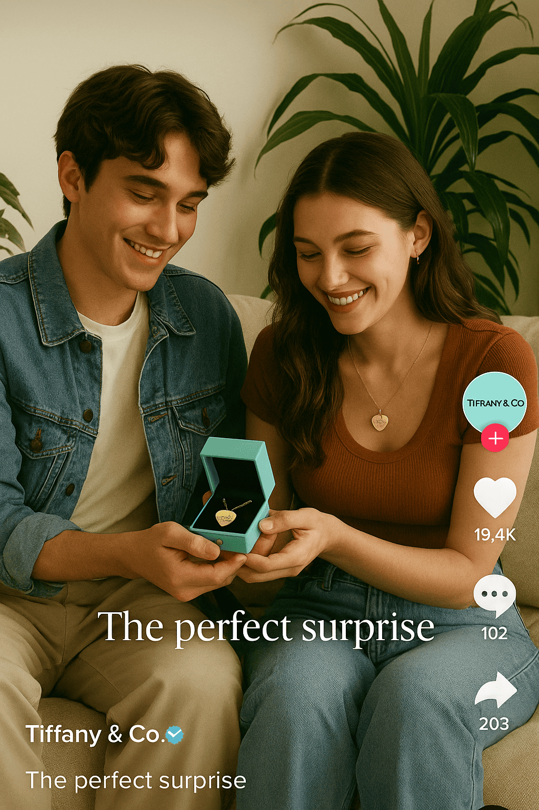
Short-form gifting content reframes love beyond a single traditional milestone and makes the brand relevant to more everyday emotional moments.
Editorial and educational modules make owned channels useful beyond transaction, supporting discovery and relationship-building.
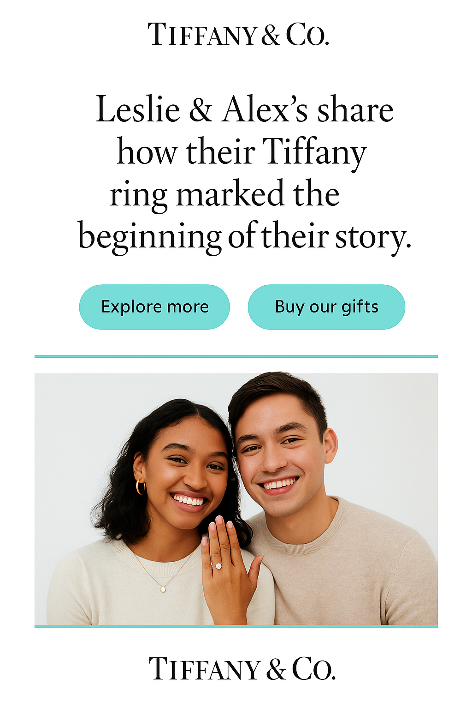
Customer stories connect product to real emotional meaning, giving the campaign a participatory layer.
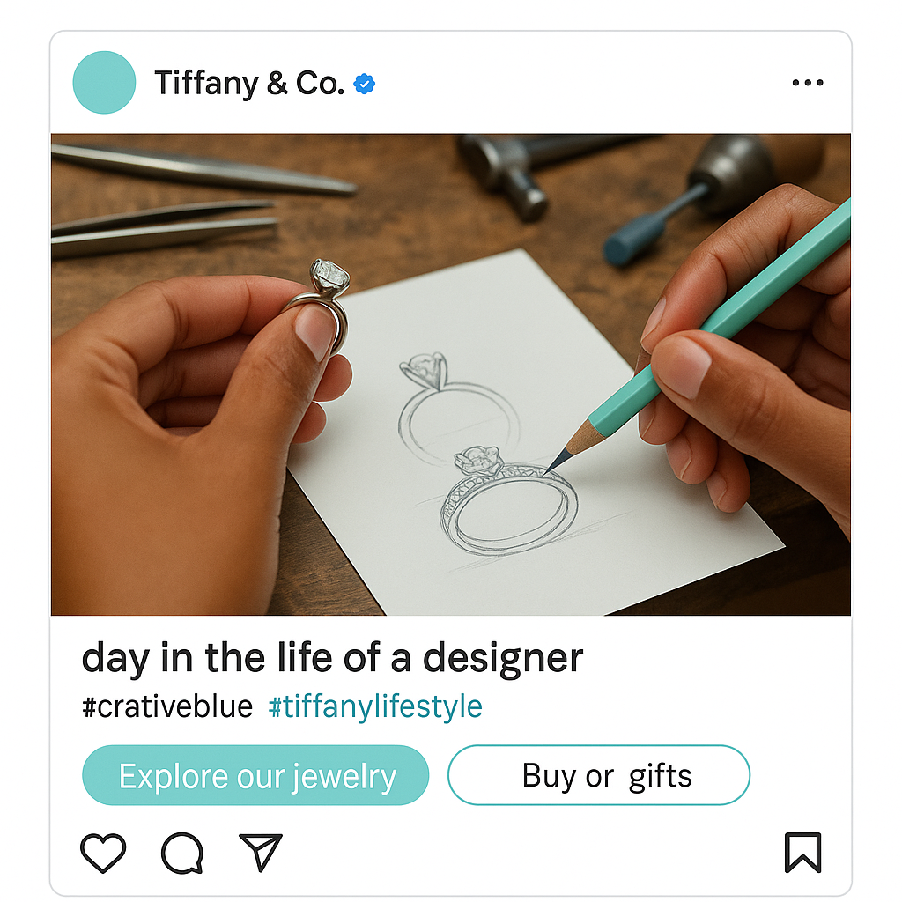
Designer-led content opens the brand world and makes expertise feel accessible to a younger audience.
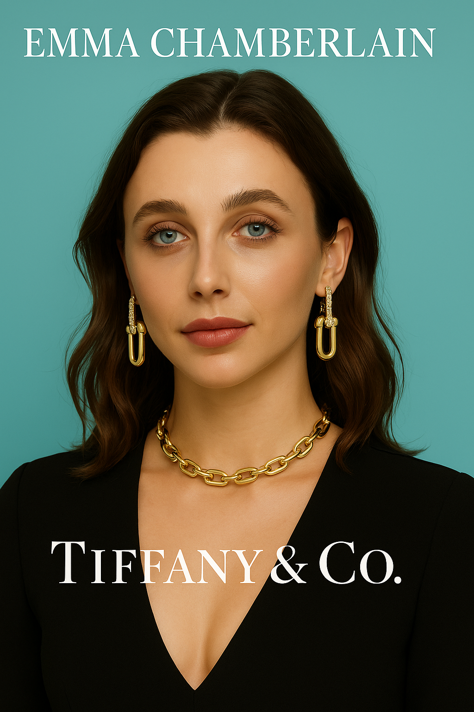
The execution is presented as a fashion-editorial moment rather than another social ad: ambassador, styling and jewellery work together to demonstrate how the positioning could live in culture.
I work at the intersection of business, technology and execution — structuring complex problems, translating operational needs into workable solutions and coordinating the people required to deliver them.
My consulting experience has moved across operational transformation, reporting, technology assessment and project delivery. The common thread is turning fragmented business needs into a structured path from definition to implementation.
Three engagements show the range of my work: digitising operational processes, building management reporting and structuring a technology-selection benchmark.
The deliverables change by project. The working logic remains consistent: understand the problem before designing the output, make requirements explicit, align the right stakeholders and validate before release.
Clarify the business problem, scope, users and decision to be made.
Turn business needs into requirements, KPIs, process logic or evaluation criteria.
Coordinate business, IT, data teams, vendors and end users around dependencies and ownership.
Use testing, stakeholder review, data-readiness checks or structured cc-evidence to challenge assumptions.
Move from analysis to implementation, deployment, handover or a decision-ready recommendation.
Making complex work
clear enough to move.
My role is rarely limited to one discipline. It sits between analysis and execution: understanding what the business needs, translating it for technical teams, keeping delivery moving and making the result usable for the people who depend on it.